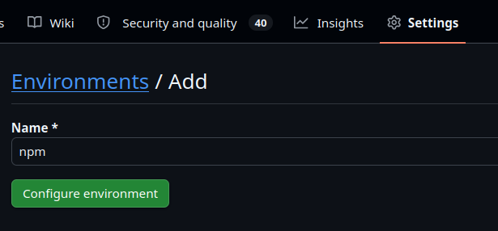

One click OIDC Staging setup for NPM
Installation:
Drag this button to your bookmarks bar to save it as a bookmarklet:
Usage:
Go to your package as a privileged user and click the bookmark. All you need to do is enter 2fa. You'll be asked for the workflow name once per repository.
Environment is hardcoded to "npm" so use that for environment name in github.

- It's not a browser driver, so it can't steal your session or your 2fa token - this code is garbage collected before you navigate away to the 2FA screen.
- It's not an extension, so it can't get updated with malware.
- You can inspect all the code if you want.